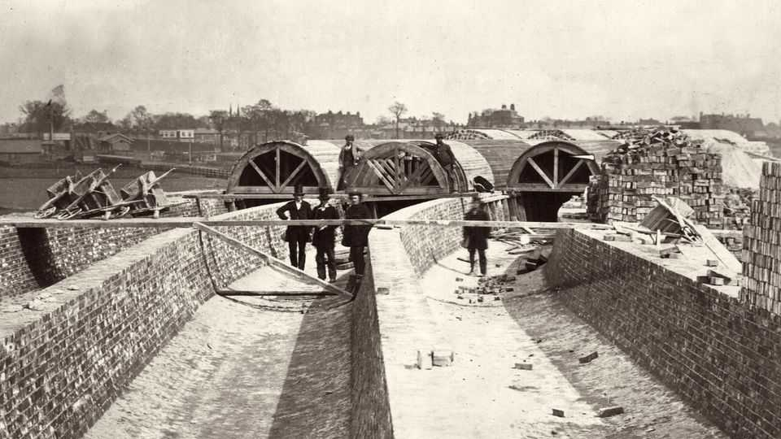

Urban life rests on invisible, extraordinary technology
A new book explores the invaluable inventions you rarely think about

Sep 10th 2026
WANT TO have a frightening experience? Walk into any office full of workers who fear AI is about to make them obsolete and shout, “Sometimes it’s good when technology eliminates jobs!” The interval between furious cubicle-dwellers grabbing you and them finding a large window to dangle you from should be enough time to tell them about gong farmers. These unfortunate souls cleaned London’s human-waste receptacles and sold their contents to farmers. One of the Victorian era’s greatest technological innovations, sewers with pumping stations, put them out of business.
Few people today see sewers, pedestrian crossings, street grids or windows as technological innovations. That only testifies to their success. They are, instead, simply part of the fabric of urban life. In an informative, often funny compendium, Jonn Elledge, a columnist for the New Statesman, tries to awaken readers’ sense of wonder at the miracle of modern city life, and get them to appreciate the agglomeration of marvels that makes it possible.
Each chapter in “31 Inventions that Built Our World” is devoted to a different innovation. The book thus has a pleasantly digressive quality, aided by the author’s obvious fascination with cities and their evolution. Some inventions have a clear origin and are easily understood as technology, though their spread was not always rapid. Putting trains underground first happened in London in the mid-19th century: railway executives and other grandees took the first ride in January 1863. Where was the second underground rail system? Budapest, 33 years later.
Mr Elledge’s fondness for obscure trivia is among this book’s many delights: a single horse-drawn bus in Victorian London or New York, for example, produced around a third of a tonne of manure per day. The first general-use elevator appeared at a department store in New York in 1857, moving at an agonisingly slow speed of 20 centimetres per second.
The book’s most enlightening parts are devoted to two types of inventions. The first is the sort of thing so deeply ingrained in urban design that it seems more natural than invented. Consider when the first house was numbered: Mr Elledge cites Prescot Street, London, in 1708. The why of numbering is clear. It meant that postmen did not have to continue to find addresses like this (an actual example): “To my sister Jean, Up the Canongate, Down a Close, Edinburgh. She has a wooden leg.”
The second type of invention comprises those that through grinding, incremental progress have become immeasurably superior to their first incarnations. Anyone unlucky enough to have driven a Yugo might put cars in that category, but a better candidate is windows. From a pig bladder stretched over an opening in the wall to let in (very little) light to molten mixtures of limestone, sodium carbonate and sand to modern double-glazed windows of uniform thickness, “What was once…a technology available only to the richest and most godly, is now so ubiquitous that we, well, look right through it.” ■